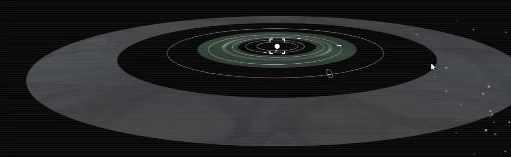
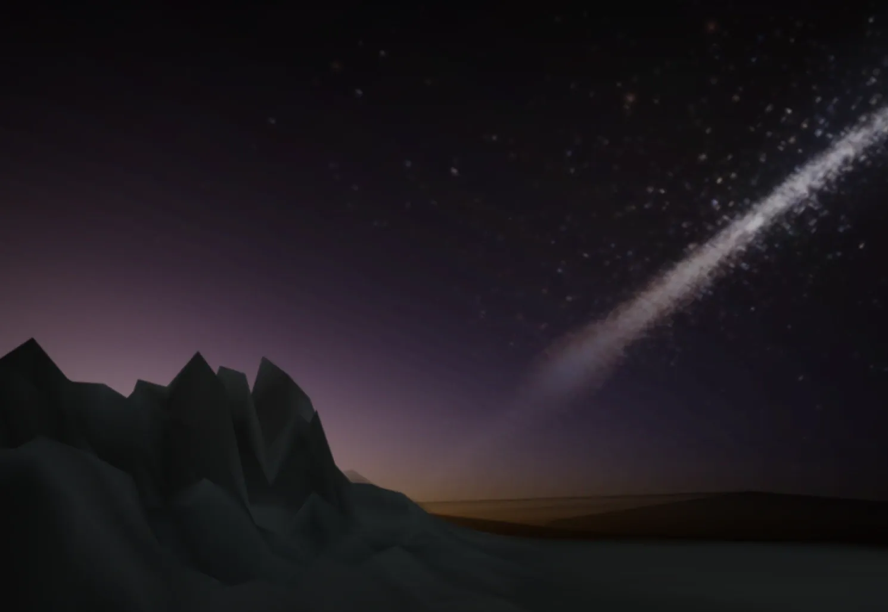
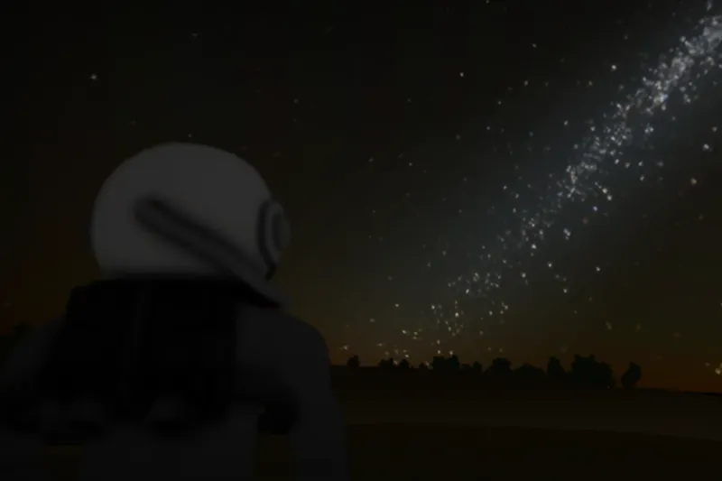
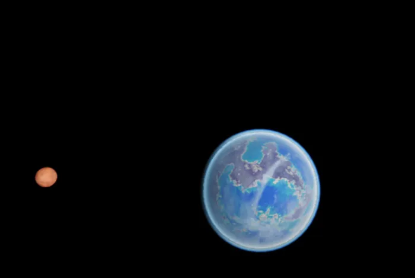
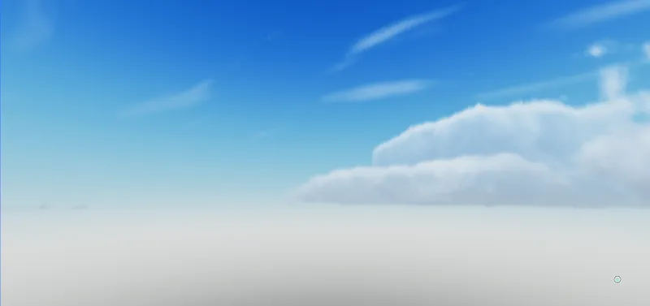
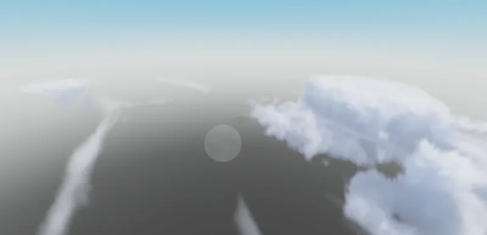

Every star is a solar system
Each star anchors its own system of orbiting planets, moons and belts. Pull up the system map to see the whole thing: orbits, bodies and where you're headed next.
Pre-Alpha 1.00 Almost here PLANEX Roblox
Every star is a solar system. Every solar system has worlds.
A procedurally generated space exploration and survival game on Roblox, rebuilt from the ground up. Leave the surface, cross the void and find what's waiting out there. The first playable pre-alpha is almost here.
PLANEX has been completely rebuilt with a new foundation, new worlds and a new look, and the first playable pre-alpha is nearly ready. The exact date and access details drop on Discord first.
The pre-alpha is the first playable step, not the finished game. Expect rough edges, missing systems and fast, frequent changes, and help us shape what comes next.
Star systems, planets and moons are generated procedurally, so every system you visit is its own place with its own conditions.

Each star anchors its own system of orbiting planets, moons and belts. Pull up the system map to see the whole thing: orbits, bodies and where you're headed next.
With true simulated atmospheric scattering, leave the ground behind and climb until the horizon curves away, then keep going into open space. Navigation markers track planets and their distance, so the next world is always a destination, not just scenery.

Your suit reads the world around you: surface temperature, local time and which body you're standing on. Night on Aetuke-d drops well below −100 °C, and survival starts with knowing where you are.
Zoom from a whole system down to a single moon. Orbits, bodies and your own position are mapped live, so you can plan the route before you commit to the jump.
The universe is procedurally generated and never runs out. These are just snapshots of places we stopped on the way, with the readings the suit gave at the time. Every star you fly to has worlds of its own.
Surface 68.90 °C, local time 17:57, uID 98911-2
Dunes as far as the horizon. Close to sunset, the ground still reads almost 69 °C.

Surface 160.59 °F, local time 20:20, uID 98911-3
An ocean world with forested coastlines. Its nights open onto a sky full of stars.

Observed from orbit, one red companion moon, uID 49230-4
A blue world in a different system entirely, shadowed by a rust-red moon.
Awaken stranded with a damaged exosuit and a ship that won't fly. Your first objective: survive. From there, gather resources, craft new technology and rebuild your hyperdrive to take to the stars.
Build bases, trade with other explorers, chase anomalies through the void, and team up with friends to make your mark on the galaxy. That's where PLANEX is headed, and the pre-alpha is the first step.
Volumetric clouds are the next big step for planetary atmospheres. These shots come from our cloud prototypes and show the visual direction we're aiming for.
Not in pre-alpha Volumetric clouds are still being built and are not part of the Pre-Alpha 1.00 build. Images below are a visual target, not current gameplay.


A rough picture of what's in the rebuilt game today and what's still ahead. Priorities shift as we build.
Roblox terrain can't take PLANEX where it needs to go, so planets are moving to Editable Meshes for full control over every world. A floating origin keeps huge solar systems stable, and viewport rendering draws distant planets in the sky.
Meet the individuals working behind the scenes to bring PLANEX to life and keep our community running smoothly.
The architects and engineers behind the game's mechanics, visuals, and audio.
The project lead responsible for the overall vision, core systems, and management of the development cycle.
Key contributors handling the coding, building, and technical implementation of game features.
The creative mind behind the atmospheric audio, SFX, and music that defines the PLANEX experience.
Valued contributors who assist with specific assets, testing, or specialized technical tasks.
Screenshots from the rebuilt PLANEX. Select any image to view it full size.
Very soon. Pre-Alpha 1.00 is almost here, and the exact date and access details will be announced on our Discord first. Joining the Roblox community is the best way to be ready on day one. The pre-alpha is the first playable step; the full game is still being built.
PLANEX has been rebuilt from the ground up: new world generation, new visuals and a new foundation for everything that comes next. Everything on this site shows the rebuilt version.
No. Volumetric clouds are in development and are not part of the Pre-Alpha 1.00 build. The cloud images on this site come from prototypes and show the visual direction we're working toward.
An early, evolving build. Some systems from the long-term vision, like crafting, bases and trading, won't be there yet, and you'll likely run into bugs. Your feedback on Discord directly shapes what we build next.
PLANEX is being built exclusively for Roblox, which runs on PC, mobile and console.
Yes. PLANEX is designed with multiplayer in mind. The long-term goal is for you to team up with friends to explore planetary systems and form factions across the galaxy.
Join the community, share feedback, and if you'd like to support the project directly, you can do so on Patreon.
Pre-Alpha 1.00 Almost here
The release date, access details and every dev update land on Discord first. If you only join one thing, join this.